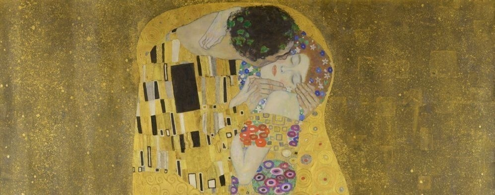

Art Rental Platform · United Kingdom
Rent original art
from independent artists
Flexible rentals for homes, offices and institutions. Swap anytime. No purchase required.



340+
Artists
2,800
Works
£28
From /mo